조경기사 (2015-05-31 기출문제)
1과목: 조경사
1. 다음 중 물 풍금(Water Organ)이 있었던 것으로 유명한 로마 근교의 빌라는?
- 빌라 마다마(Villa Madama)
- 빌라 데스테(Villa d'Este)
- 빌라 랑테(Villa Lante)
- 빌라 페트라이아(Villa Petraia)
(정답률: 62%)

2. 중국의 사자림에는 「견산루(見山樓)」의 편액을 볼 수 있는데, 그 이름은 아래 누구의 문장에서 나왔는가?
- 왕희지(王羲之)
- 주돈이(周敦頤)
- 도연명(陶淵明)
- 황정견(黃庭堅)
(정답률: 67%)
3. 페르시아의 이스파한(Isfahan) 왕궁의 정원묘사에 해당하지 않는 것은?
- 마이단이라 부르는 380m × 140m나 되는 장방형의 공원광장이 있다.
- 도로와 도로가 교차되는 지점에 사람의 조각물이나 화단이 만들어졌다.
- 서쪽에는 체하르 바(Tshehar Bagh)라고 불리는 7Km이상의 길게 뻗은 넓은 도로가 있다.
- 도로 중앙에 노단과 수로 및 연못이 있고 양가에 가로수가 심겨져 있다.
(정답률: 75%)
4. 다음 신라시대의 사찰 가운데 입지의 지형적 특성이 다른 하나는?
- 홍륜사(興輪寺)
- 황룡사(皇龍寺)
- 불국사(佛國寺)
- 분황사(芬皇寺)
(정답률: 73%)
5. 독일에서 발달한 분구원(分區園)에 대한 설명중 가장 거리가 먼 것은?
- 초기에는 도시민의 보건과 녹지 제공에 중점을 두었다.
- 제 1차 대전 중에는 시민의 식량생상지로 공헌하였다.
- 도시민의 보건을 위해 채소, 화훼 재배장으로 제공하였다.
- 레크레이션을 위한 기능에서 식량 생산지로 발달 하였다.
(정답률: 69%)
6. 다음 중 지구랏트(ziggurats)의 설명으로 가장 거리가 먼 것은?
- 옛 Sumerian Temple로서 신들의 거처로 여겼다.
- 신성스런 나무 숲과 맨 꼭대기에는 사원이 있었다.
- 주축이 직선적으로 강조되며 대칭적 접근로가 그 특징으로 들 수 있다.
- 평원에 이집트의 피라미드에 비교 될 만한 인공산과 같은 높이로 단(壇)을 쌓아 올렸다.
(정답률: 65%)
7. 현재 사찰에서 누(樓)를 통한 중심공간으로의 진입방식이 양측면 진입방식이 아닌 곳은?
- 부석사 안양루(安養樓)
- 화엄사 보제루(普濟樓)
- 쌍계사 팔영루(八泳樓)
- 선암사 종고루(鐘鼓樓)
(정답률: 54%)
8. 이슬람 정원에 관한 설명 중 옳지 않은 것은?
- 물은 모스크(Mosque) 안에서 의식용의 못이 되었다.
- 헤네랄리페 정원의 축선은 영국의 자연풍경식에 영향을 주었다.
- 이슬람 세력의 동진(東進)으로 인도 무굴제국 정원발달에 기여했다.
- 이슬람교와 관련된 ‘파라다이스’ 개념이 정원내의 수로(水路) 등에 표현되었다.
(정답률: 72%)
9. 다음 한국전통조경에 관한 설명 중 가장 거리가 먼 것?
- 낭만적이거나 대륙적인 특성을 찾기 어렵다.
- 창덕궁에는 후원양식의 대표적인 정원이 있다.
- 꽃을 감상하는 수목식재로 계절변화의 즐거움을 추구하였다.
- 조선시대는 한국적 기후와 풍토에 적합한 자연 풍격식 조경이 발달했다.
(정답률: 77%)
10. 우리나라 전통정원에서 주로 쓰여진 시설이 아닌 것은?
- 괴석
- 굴뚝
- 화계
- 준거
(정답률: 69%)
11. 이탈리아 빌라에서 조영자 가족이나 방문객을 위한 거주 휴식의 기능을 하는 곳은?
- 카지노(Casino)
- 카펠라(Cappella)
- 테라자(Terrazza)
- 템피에트(Tempietto)
(정답률: 76%)
12. 18세기 영국 자연풍경식 태동기에 지배한 사상적 영향을 가장 바르게 나열한 것은?
- 고전주의의 계속, 중국의 영향, 자연주의 운동
- 문예주의의 계속, 미국의 영향, 자연주의 운동
- 인문주의의 계속, 영국의 영향, 신미주의 운동
- 낭만주의의 계속, 중국의 영향, 신미주의 운동
(정답률: 74%)
13. 조선 능(陵)은 자연의 지세와 규모에 따라 봉분의 형태가 다른데 가장 관계가 먼 것은?
- 우왕좌비
- 상왕하비
- 국조오례의
- 향궐망배
(정답률: 70%)
14. 다음 중 발굴 조사를 통해 밝혀진 경주 동궁월지(안압지)의 조경 수법은?
- 좌우 대칭의 기하학적인 구성으로 되어 있다.
- 연못의 큰 섬에는 모래를 사용한 평정고산수 수법으로 꾸몄다.
- 넓은 바다를 연상할 수 있도록 조성하였고, 수위(水位)를 조정하였다.
- 회유식(回遊式) 정원의 수법을 도입하여 산책로의 기능을 강화하였다.
(정답률: 80%)
15. 티볼리의 빌라 데스테(Villa d'Este of Tivoli)의 설명으로 가장 거리가 먼걸은?
- 성관(城館) 자체는 매우 간소하고 평범한 전원형 별장이다.
- 6개의 테라스 가든으로 만들었고 각 테라스는 화강석 계단으로 연결하였다.
- 최저노단의 네 개의 연못들 뒤에는 짙푸른 감탕나무의 총림이 자리잡아 다시 명암의 대비를 이룬다.
- 리고리오(Pirrl Ligorio)는 근본 것으로 명확한 중심축선을 따른 일련의 테라스를 빌라의 기념적 매스(mass)에 이르게 하였다.
(정답률: 60%)
16. 영국의 정형식 정원양식에 관한 내용이 올바르게 연결된 것은?
- 헨리 와이즈(Menry Wise)-채츠워스(Chatsworth)
- 앙드레 몰레(Andre Mollet)-몬타큐트(Montacute)
- 르 노트르(Le Notre)-햄턴 코트(HamptonCourt)
- 월리엄 챔버(William Chamber)-은폐호(fosse)
(정답률: 63%)
17. 조선시대에는 풍수설에 따라 택지(宅地)를 선정했기 때문에 안채 뒤에 경사지가 있는 경우 이경사지는 토사유출을 막기 위해 계단식으로 다듬고 장대석으로 굳혔는데 이 자리를 무엇이라고 불렀는가?
- 치미(鴟尾)
- 석조(石措)
- 석가산(石假山)
- 화계(花階)
(정답률: 70%)
18. 중세 정원에 관한 설명으로 가장 거리가 먼것은?
- 파티오(patio)가 발달한 곳은 스페인이다.
- A.D 4~5C 부터 약 1000년 동안의 기간이다.
- 건축과 정원은 교회의 존엄성을 나타내기 위해 존재했다.
- 중세 전기에는 성관정원이 후기에는 수도원 정원이 발달했다.
(정답률: 70%)
19. 고려 예종댸 때 객관정원으로 행궁유구, 연못과 조경시설이 발견된 곳은?
- 미륵사지
- 산춘정지
- 혜음원지
- 만춘정지
(정답률: 53%)
20. 고구려 안학궁원의 정원 구성 요소로만 짝지어진 것은?
- 경석, 인공축산, 섬, 못
- 못, 인공축산, 경석, 삼신선도
- 삼신선도, 경석, 계류, 못
- 경석, 곡수거, 계류, 모래밭
(정답률: 59%)
2과목: 조경계획
21. 다음 중 수요예측 기간이 단기간인 경우와 환경조건의 변화가 적고 현재까지의 추세가 장래에도 계속 된다고 판단되는 경우에 가장 효과적인 수요 예측 방법은?
- 중력 모델
- 시계열 모델
- 요인분석 모델
- 수용능력 모델
(정답률: 61%)
22. 주택건설기준 등에 관한 규정에 따라 조경을 하고자 하는 부분의 지하에 주차장 등 지하구조물을 설치하는 경우에는 식재에 지장이 없도록 두께(m) 얼마 이상으로 토층을 조성하여야 하는가?(관련 규정 개정전 문제로 여기서는 기존 정답인 2번을 누르면 정답 처리됩니다. 자세한 내용은 해설을 참고하세요.)
- 0.5
- 0.9
- 1.2
- 1.5
(정답률: 80%)
23. “도시공원 및 녹지 등에 관한 법률 시행규칙”에서 도시공원의 편익시설에 해당하는 것은?
- 그늘시렁
- 전망대
- 야영장
- 자연체험장
(정답률: 59%)
24. 다음 중 페리(C.A.Perry)가 주장한 근린주구(Neighborhood Precinet)에 과한 설명으로 틀린 것은?
- 일반적으로 초등학교 및 근린상가를 포함한다.
- 근린주구의 구상은 스타인과 라이트 등에 의해 계획적으로 구현되었다.
- 국토의 계획 및 이용에 관한 법률에 나타나는 지역지구제의 최소단위를 말한다.
- 개개의 근린주구의 요구에 부합되도록 계획된 소공원과 위락공간의 체계가 있다.
(정답률: 56%)
25. 주차장으로 사용되는 면적이 800m2, 주차장 외의 용도로 사용되는 면적이 200m2 인 노외주차장에 관리사무소와 간이매점 및 화장실을 설치하려고 한다. 총 부대시설의 면적은 얼마까지 가능한가? (단, 조례 및 기타 중복 등의 사유는 적용하지 않는다.)
- 60m2
- 160m2
- 200m2
- 300m2
(정답률: 53%)
26. 인공습지를 조성하기 위한 계획 설계의 지침으로 옳지 않은 것은?
- 다양한 식생, 삼림조성 등으로 수자원을 확보하도록 한다.
- 번식을 위한 둥지, 보금자리, 도피장소 등으로 이용될 수 있는 틈새, 웅덩이, 수목, 덤불 등을 배치한다.
- 소로나 주변 편의시설 등 기존시설을 활용하기 보다는 새로운 시설물을 통해 생태계에 미치는 악영향을 최소화한다.
- 최소면적 이상으로 단위 생태 공간을 조성하여 종다양성을 확보하며, 자연형성과정에 바탕을 둔 생태적 배식기법으로 설계하고, 선형공간(corridor)은 전이공간(추이대)으로서 기능을 발휘할 수 있도록 설계한다.
(정답률: 76%)
27. 다음 중 자연공원법에 따라 공원자연보존지구를 지정하는 이유가 되지 못한 것은?
- 경관이 특히 아름다운 곳
- 생물다양성이 특히 풍부한 곳
- 보존대상 주변에 완충공간으로 보전할 필요가 있는 곳
- 특별히 보호할 가치가 높은 야생동ㆍ식물이 살고 있는 곳
(정답률: 68%)
28. 다음 중 하천(수변)공간을 공원으로 계획할 때 고려해야 할 사항으로 옳지 않은 것은?
- 수변공간에는 식생부도(浮島), 녹화용 포대 등 물 환경 조건을 고려하여 수생식물 서식기반의 도입을 계획한다.
- 하천생태계 기능평가를 통해 표준적인 생태 기능과 가치를 지니는 표준 하천을 계획모형으로 선정한다.
- 수변은 다양한 야생생물이 서식하고 있으므로 별도의 많은 양분을 공급해 줄 계획을 수립한다.
- 수변광간과 육상공간과의 연계성 확보는 수변생태계의 교란을 최소화하도록 고려한다.
(정답률: 73%)
29. 다음 중 산업단지 및 공장정원과 관련된 계획ㆍ설계의 설명이 틀린 것은?
- 공장정원의 바닥은 나지로 남겨두어서는 안 된다.
- 산업단지는 지속가능한 녹색 생태산업단지의 원리를 적용한다.
- 산업단지는 쾌적한 근무여건 확보를 위해 휴게공간, 운동공간, 위락공간, 산책공간을 갖추도록 한다.
- 공창정원은 공해물질에 내성이 강하고 먼지의 흡착력이 강한 침엽수의 식재면적을 전체 수목식재면적(수관부 면적)의 70% 이상으로 정한다.
(정답률: 63%)
30. 다음 [보기]의 설명에 해당하는 곳은?
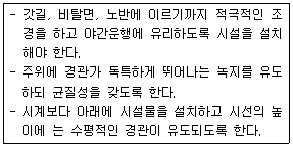
- 평지 직선부
- 평지 곡선부
- 산지 직선부
- 시가지 곡선부
(정답률: 59%)
31. 다음 설명의 ( ) 안에 적합한 용어는?
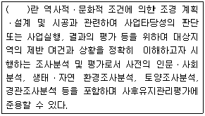
- 조경설계
- 기분계획설계
- 조사분석평가
- 환경영향평가
(정답률: 57%)
32. 주택단지를 조성하기 위한 정지계획(grading plan)위 기본적인 원칙을 틀린 것은?
- 구조물 주변의 지반은 경사를 두어 배수문에에 도움을 주어야 한다.
- 정지계획은 대지경계선 밖에서부터 순차적으로 정리되어야 한다.
- 경사 변경 전에 모든 표토는 걷어내고 정리 완료 후에 식재지역에 활용토록 한다.
- 비탈진 경사는 가급적 토양의 휴식각을 넘지 않아야 한다.
(정답률: 59%)
33. “도시공원 및 녹지 등에 관한 법률”에서 정하고 있는 「도시민이 이용할 수 있는 공원녹지를 확충하기 위하여, 도시지역안의 식생 또는 임상이 양호한 토지의 소유자와 해당토지에 대해, 해당토지의 식생 또는 임상의 유지ㆍ보전 및 이용에 필요한 지원을 하는 것을 내용으로 하는 계약」은 무엇인가?
- 녹지활용계약
- 도시녹화계약
- 녹화계약
- 녹지지원계약
(정답률: 58%)
34. 생태계의 설계 및 복원에서 중요한 자가설계(self-design)의 개념이 아닌 것은?
- 인간의 에너지 투입이 적은 설계
- 생태계 구성요소들이 스스로 생태계를 구성해가도록 설계
- 도입종(species)들이 생태계에 적응할 수 있는 설계
- 자연의 힘보다는 인간의 노력에 의해 생태계가 조절되는 설계
(정답률: 77%)
35. 도시·군계획시설의 결정ㆍ구조 및 설치기준에 관한 규칙상 정하고 있는 용도지역별 도로율이 틀린 것은? (문제 오류로 실제 시험에서는 1, 2, 4번이 정답처리 되었습니다. 여기서는 1번을 누르면 정답 처리 됩니다.)
- 공업지역 : 10퍼센트 이상 20퍼센트 미만
- 녹지지역 : 3퍼센트 이상 15퍼센트 미만
- 상업지역 : 25퍼센트 이상 35퍼센트 미만
- 주거지역 : 20퍼센트 이상 30퍼센트 미만
(정답률: 74%)
36. 아파트 단지 내 가로망 중 루프(loop)형의 특징에 대한 설명으로 옳지 않은 것은?
- 상대적 통과교통의 감소로 주거환경의 안정성 확보
- 진입에 대체성이 있으나, 동선이 연장 길이가 증가
- 상가 및 공동이용 공간의 시설배치가 용이
- 격자형에 비해 사람과 차량동선의 교차가 많음
(정답률: 71%)
37. G.Ekbo(1978)는 주택정원이 내ㆍ외부공간을 관련시켜 매우 효율적으로 다음 4가지 주요기능권 으로 주택정원을 분할하였다. 이 중 특징이 잘못 설명된 것은?
- 전정(public access) - 수목, 초화류, 계단, 자연석, 분수 등으로 화려하게 치장하는게 좋다.
- 주정(general living) - 이용의 측면도 고려하여 중심부가 비어 있는 것이 바람직하며 파고라(pergola) 녹음수, 정자 등 해를 가려주는 장치가 필요하다.
- 후정(private living) - 침실에서의 전망이나 동선을 살리되 외부에서는 가능한 시각적, 기능 적차단을 하여 프라이버시가 최대한 보장되어야한다.
- 작업정(Work space) - 전정이나 후정과는 시각적으로 어느 정도 차단하면서 동선은 연결될 필요가 있다.
(정답률: 64%)
38. 경관의 변화 요인(variable factors)에 해당하는 것은?
- 질감
- 색채
- 선
- 시간
(정답률: 69%)
39. 다음 설명은 어떤 유형의 광장 결정 기준인가? (단, 도시ㆍ군계획시설의 결정ㆍ구조 및 설치기준에 관한 규칙을 적용한다.)
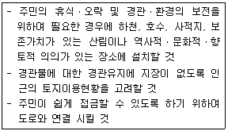
- 교통광장
- 일반광장
- 경관광장
- 지하광장
(정답률: 74%)
40. 다음은 자연환경보전법에서 정의하는 "생태축에" 대한 설명이다. ( )안에 들어갈 단어를 순서대로 바르게 나열한 것은?
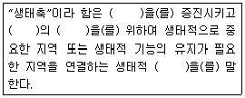
- 생물다양성 - 생태계기능 - 연속성 - 서식공간
- 생태계 기능 - 생물다양성 - 연속성 - 서식공간
- 생태계 기능 - 서식공간 - 생태다양성 - 연속성
- 생물다양성 - 생태계 기능 - 서식공간 - 연속성
(정답률: 59%)
3과목: 조경설계
41. 건축물의 피난ㆍ방화구조 등의 기준에 관한 규칙상 다음 설명의 값으로 맞는 것은?
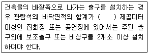
- 250
- 300
- 500
- 600
(정답률: 52%)
42. 다음 중 차폐미(遮蔽美)가 적용될 수 있는 적당한 장소가 아닌 것은?
- 좁은 토지의 절토면(切土面)
- 도로에서 보이는 공동묘지
- 수변의 경관이 불량한 연못
- 차경(借景) 대상물이 보이는 곳
(정답률: 67%)
43. 조경설계기준상의 하천조경 설계의 기본 원칙으로 틀린 것은?
- 설계대상 하천의 경관은 과거 지도 등을 이용하여 그 하천 본래의 경관에 가깝게 복원시킨다.
- 하천조경에서는 무생명 재료의 사용을 줄이고 생명재료를 주재료로 이용해야 한다.
- 하천조경설계는 각종 동ㆍ식물 이동에 지장을 주지 않고 도움이 되도록 해야 한다.
- 자연하천구간은 시설물 설치 등 인위적인 간섭을 원칙으롤 삼는다.
(정답률: 74%)
44. “환경색채”의 정의로 틀린 것은?
- 역사성과 인문환경의 영향으로 지역색을 형성 한다.
- 색의 상징성을 이용하여 공공장소에서 재해방지와 구급 체계 시설에만 사용되는 색채이다.
- 자연과 친화된 환경일수록 풍토성이 강해지며 지역이 고립되고 차단될수록 지역색의 특성이 더욱 강해진다.
- 인간에게 관계되는 환경을 경관색채의 의미로, 인간에게 심리적 영향을 주는 색채이다.
(정답률: 73%)
45. 디자인의 원리 중에서 다음을 의미하는 것은?
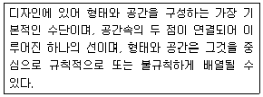
- 축(Axis)
- 질서(Order)
- 기준(Datum)
- 위계(Hierarchy)
(정답률: 76%)
46. 다음 공간요소 중 수평적인 요소인 동시에 수직적인 요소가 될 수 있는 것은?
- 담장
- 굴뚝
- 정자목
- 하천
(정답률: 69%)
47. 조경설계기준상 각종 포장재와 관련된 설명으로 틀린 것은?
- 투수성 아스팔트 혼합물은 공극률 9~12%를 기준으로 한다.
- 포장용 석재는 압축강도 49Mpa 이상, 흡수율 5% 이내의 것으로 한다.
- 콘크리트 블록 포장재의 포설용 모래는 투수계수는 기준 이상으로 No.200체 통과향이 6%이하이어야 한다.
- 포장용 콘크리트의 재령 28일 압축강도 15.4Mpa 이상, 굵은 골재 최대치수 30mm이하로 한다.
(정답률: 57%)
48. 다음 중 여러 가지 파장의 빛이 유사한 강도를 갖고 고르게 섞여 있을 때 나타나는 색은?
- 보색
- 백색
- 유채색
- 병치혼색
(정답률: 56%)
49. 시각적으로 일어나는 착각현상인 착시가 잘 나타나는 예로 틀린 것은?
- 길이의 착시
- 면적의 착시
- 방향의 착시
- 형태의 착시
(정답률: 53%)
50. 그림과 같은 투상법을 무엇이라 하는가?
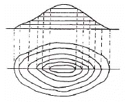
- 사투방법
- 정투상법
- 표고 투상법
- 축측 투상법
(정답률: 67%)
51. 기본설계 단계에서 진행되는 작업에 대한 설명으로 틀린 것은?
- 계획의 기본 목표, 프로그램을 수립한다.
- 공간구성에 대한 개념 및 의도를 확실하게 하여 구체적인 공간형태를 만든다.
- 평면도, 단면도 등의 기본적인 도면과 함께 조감도나 모형을 만들기도 한다.
- 여러 가지 가능성을 검토하여 공간구성을 확정하는 단계이다.
(정답률: 49%)
52. 조경설계기준상의 생태통로 설계 시 육교형 생태통로 유형을 결정할 때 고려할 사항으로 틀린 것은?
- 서식지간 거리가 넓은 경우
- 지표면으로 이동이 가능한 경우
- 지상에 장애물/오염원 등이 있는 경우
- 절토지역간 거리가 멀고, 절토지가 깊은 경우
(정답률: 70%)
53. 다음 실시설계에 대한 설명으로 가장 적합한 것은?
- 설계 프로젝트의 개략적인 골격을 정한다.
- 계획 또는 설계의 전반적인 과정을 결정한다.
- 분석 자료의 취합 및 정리를 하는 단계이다.
- 시공을 위주로 하는 상세도면 및 공사비, 시방서 등을 작성한다.
(정답률: 73%)
54. 다음 제 3각법의 경우 정면도와 우측면도가 주어졌을 때 평면도로 알맞은 것은?
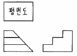
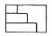
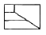
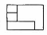
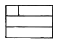
(정답률: 60%)
55. 「생태숲」이란 자생식물의 현지 내 보전기능을 강화하고, 특산식물의 자원화 촉진과 숲 복원기법 개발 등 산림생태계에 대한 연구를 위하여 생태적으로 안정된 숲을 말한다. 다음 중 생태숲은 얼마 이상인 산림을 대상으로 지정할 수 있는가?
- 30만 제곱미터
- 50만 제곱미터
- 80만 제곱미터
- 100만 제곱미터
(정답률: 50%)
56. 조경설계기준 중 “야외공연장”에 관한 설명으로 틀린 것은?
- 객석에서 무대로의 부각은 30°이상으로 한다.
- 평면적으로 무대가 보이는 각도(객석의 좌우영역)는 101 ~ 108° 이내로 설정한다.
- 객석 좌판 좌우간격은 평의자의 경우 45 ~ 50cm 이상으로 한다.
- 주변환경에 주거단지 등이 있으면 그 곳의 반대방향으로 배치하여, 음향에 직접적으로 영향을 받지 않도록 한다.
(정답률: 62%)
57. 조경설계기준상 토양에 대한 평가를 화학적 기준에 따라 상급(pH6.0 ~ 6.5), 중급(pH5.5 ~ 6.0, pH6.5 ~ 7.0), 하급(pH4.5 ~ 5.5, pH7.0 ~ 8.0), 불량(pH4.5 미만, pH8.0초과)으로 구분하고 있다. 다음 중 바르게 설명한 것은?
- 일반적인 식재지는 중급 이상의 토양평가 등급을 적용한다.
- 답압의 패해가 우려되는 곳의 토양은 상급 이상의 평가등급을 적용한다.
- 식물의 생육환경이 열락한 매립지나 인공지반 위에 조성되는 식재지반에는 상급 이상의 평가등급을 적용한다.
- 고품질의 조경용 식물을 식재하는 곳이나 조경용 식물의 건전한 생육을 필요로 하는 곳에서는 상급의 평가등급을 적용한다.
(정답률: 53%)
58. 재료 단면의 경계 표지 중 잡석을 나타낸 것은?
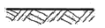
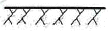
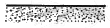
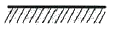
(정답률: 65%)
59. 색의 3속성 중 명도와 채도를 혼합한 개념으로 색상이 달라도 비교적 비슷한 느낌을 주는 것은?
- 색조(tone)
- 형태(form)
- 양감(volume)
- 질감(texture)
(정답률: 71%)
60. 린지(K.Lynch, "The Image of the City",1961)가 주장하는 도시경관분석방법에 대한 비판 중 틀린 것은?
- 도시경관의 개개요소가 갖는 사회적, 상징적 의미가 고려되어 있지 않다.
- 이미지 형성의 주요 요소인 시각적 명료성(Legibility)이 강조되지 않는다.
- 소수의 이용자를 대상으로 하였기 때문에 결과의 신뢰도에 문제가 있을수 있다.
- 부정적인 경관요소가 이미지 형성에 미치는 영향에 대한 고려가 미비하다.
(정답률: 48%)
4과목: 조경식재
61. 경기도 이북에서 월동하기 가장 어려운 것은?
- Ligustrum obtusifolium
- Chaenomeles speciosa
- Ilex rotunda
- Syring oblata var. dilatata
(정답률: 41%)
62. 다음 그림에 해당하는 조경 수목은?
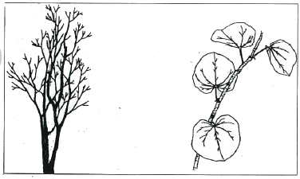
- Cercis chinensis Bunge
- Sophora japoneca L.
- Platanus orientalis L.
- Magnolia grandiflora L.
(정답률: 57%)
63. 다음 중 꽃색이 흰색 계열인 수목은?
- 모과나무
- 팥배나무
- 죽단화
- 오동나무
(정답률: 61%)
64. 수목의 가식 및 기존식생보호에 대한 설명으로 옳은 것은?
- 가식장소는 공사의 지장이 없는 범위내에서 토질과 관련 없이 설치한다.
- 가식수목의 뿌리분 주변은 공기가 완전히 방출되도록 충분히 관수해야 하며, 배수가 잘 되지 않는 곳이 좋다.
- 기존수목 주위를 절토할 때에는 수관폭 1/2 이내의 지반까지 절토할 수 있다.
- 흙쌓기로 인하여 기존 수목의 줄기가 묻힐 우려가 있는 경울 대상 수목의 수관폭을 1/2~3/4 정도 남기고 수목의 밑둥이 흙으로 매몰되지 않게 주변을 굵은 자갈 등으로 채워야 한다.
(정답률: 57%)
65. 토양조건에 대한 설명으로 옳지 않은 것은?
- 보습성이 좋은 토양은 비료분을 축적하는 보비력이 좋지 않다.
- 토양의 응집력은 토립의 대소, 구조의 조밀, 수분함량 등에 따라 다른데, 점토가 가장 크다
- 토양의 경도는 토층의 투수성, 식물뿌리의 신장 및 농업기계의 주행에 대한 지지력에 영향을 끼치는 중요한 성질이다.
- 토양온도가 낮아지면 유기물의 분해가 서서히 이루어지고 다량의 부식물이 쌓이게 된다.
(정답률: 60%)
66. “Betula platyphylla var, japonica”에 대한 설명으로 가장 거리가 먼 것은?
- 도시 가로수로서 적합하다.
- 수피는 백색이며 종이같이 옆으로 벗겨진다.
- 주야의 기온교차가 심한 기후에 적합하다.
- 음양성의 생태적 특성은 양수이다.
(정답률: 65%)
67. 식생조사 및 분석에서 두 종의 종간관계를 유추하기 위하여 종간결합을 조사하는 과정을 순서에 맞게 나열한 것은?
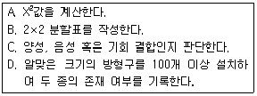
- B → A → D → C
- B → D → A → C
- D → B → A → C
- D → A → B → C
(정답률: 54%)
68. 일본잎갈나무ㆍ삼나무ㆍ편백 등의 저장 종자에 효과가 있는 종자 발아 촉진법은?
- 고온처리법
- 냉수처리법
- 황산처리법
- 종피의 기계적 가상
(정답률: 64%)
69. 다음중 참나리(Lilium lancifolium)의 특징으로 옳지 않은 것은?
- 백합과(科) 식물이다.
- 숙근성 여러해살이풀이며, 무피인경이다.
- 외래종으로 전국에 식재할 수 있다.
- 잎겨드랑이에 살눈이 달려, 비늘조각으로 번식한다.
(정답률: 59%)
70. 비탈면 식재계획을 위해 식생천이를 조사 하고자 할 때 가장 거리가 먼 것은?
- 순동화율과 분배울 조사
- 우점도, 군도, 종조성, 상재도 등 사면 식생조사
- 위도, 표고, 기상조건, 주변식생 및 지형 등 조사지 환경분석
- 시공법, 관리상황, 사면길이, 방위, 지질, 토양 등 사면구조와 입지조사
(정답률: 54%)
71. 군락을 최단거리법(Nearest individual method)에 의해 조사한 결과 평균거리가 2.0m 이었다면 ha당 밀도는 약 얼마인가? (단, 소수점 이하는 반올림 후 정수로 표기 함)
- 555 주/ha
- 800 주/ha
- 1250 주/ha
- 1600 주/ha
(정답률: 48%)
72. 다음 설명에 적합한 수종은?
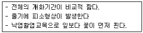
- Campsis grandifolia
- Hibiscus syriacus
- Cercis chinensis
- Magnolia denudata
(정답률: 56%)
73. 우리나라 전국의 높은 산, 중부지방 표고 500m 이상의 산림에 자생종은?
- Picea abies
- Cedrus deodara
- Abies holophylla
- Thuja occidentalis
(정답률: 53%)
74. 식재계획 및 설계에 있어서 식물을 시각적 요소로 활용하고자 할 때 중요하게 고려되어야 할 점이 아닌 것은?
- 질감(Texture)
- 크기(Size)
- 형태(Form)
- 인식(Knowledge)
(정답률: 72%)
75. 장미과(科) 식물이 아닌 것은?
- 홍가시나무
- 마가목
- 병꽃나무
- 팥배나무
(정답률: 43%)
76. 다음 중 자동차 배기가스에 가장 강한 수종은?
- Philadelphus schrenkii
- Platanus occidentalis
- Diospyros kaki
- Prunus mume
(정답률: 61%)
77. 다음 수목의 설명 중 옳지 않은 것은?
- 은사시나무의 수피는 은백색 계통이다.
- 능수버들은 암수한그루로서 솜털 같은 꽃가루가 날린다.
- 미루나무와 이태리포푸라는 모두 버드나무과(科)이다.
- 버드나무는 능수버들이나 수양버들에 비해 가지가 처지지 않는다.
(정답률: 53%)
78. 국화과(科)에 해당되는 지피식물은?
- 도라지
- 앵초
- 구정초
- 할미꽃
(정답률: 53%)
79. 군락구조의 측정에 있어서 정량적(定量的) 측도 방법에 해당하지 않는 것은?
- 빈도
- 밀도
- 피도
- 군도
(정답률: 47%)
80. 정형식 식재계획 시 다수의 수목을 규칙적으로 배식하여 상당한 공간을 메우는 방법이면, 매스로서의 양감을 부여하여야 하는 곳에 적합한 식재의 기본패턴은?
- 임의식재
- 배경식재
- 교호식재
- 집단식재
(정답률: 56%)
5과목: 조경시공구조학
81. 강(鋼)에 함유된 탄소 성분이 강재 성질에 끼치는 영향이 아닌 것은?
- 강도의 중감
- 산성의 중감
- 경도의 중감
- 연신율이 중감
(정답률: 49%)
82. 암거의 매설을 위한 기초공에 대한 설명 중 옳지 않은 것은?
- 기초가 양호하면 암거를 직접 매설하여도 된다.
- 지반이 극히 연약하여 관거의 침하가 우려될 때 말뚝기초를 설치한다
- 부등침하의 우려가 있는 기초에는 잡석, 조약돌 등을 포설한다.
- 지반이 연약한 경우 관의 보호와 지반이 부등 침하를 방지하기 위하여 콘크리트 기초를 설치한다.
(정답률: 46%)
83. 도로의 곡선부에서 자동차가 회전화려면 직선부 차선폭보다 넓게 하여 다른 차선을 침범하지 않도록 하는 것은?
- 차도확폭
- 이정량
- 완화구간
- 유도섬
(정답률: 61%)
84. 암석이 가장 쪼개지기 쉬운 면을 말하며 절리보다 불분명하지만 방향이 대체로 일치되어 있는 것은?
- 석리
- 입상조직
- 석목
- 선산조직
(정답률: 34%)
85. 원지반의 점질토 5000m3 를 굴착하여 8m3 적재 덤프트럭으로 성토현장에 반입하여 다졌다. 소요덤프트럭 대수와 다진 후의 성토량은? (단, C:0.95, L:1.30 이고, 트럭 대수는 10대 미만은 버릴 것)
- 덤프트럭:594대, 성토량:6175m3
- 덤프트럭:625대, 성토량:4048m3
- 덤프트럭:813대, 성토량:4750m3
- 덤프트럭:480대, 성토량:4048m3
(정답률: 54%)
86. 중력식 옹벽의 특징으로 부적합한 것은?
- 구조물이 복잡하다.
- 상단이 좋고 하단이 넓은 형태이다.
- 3m 이내의 낮은 옹벽에 많이 쓰인다.
- 자중으로 토압에 저항하도록 설계되었다.
(정답률: 67%)
87. 굳지 않은 콘크리트의 성질인 워커빌리티(Workability)에 대한 설명으로 맞는 것은?
- 워커빌리티가 좋으면 재료분리현상이 일어난다.
- 슬럼프 테스트를 하여 워커빌리티를 판단한다.
- 골재의 입형이 둥글수록 워커빌리티가 나빠진다.
- 굵은 골재가 많을수록 워커빌리티가 좋아진다.
(정답률: 61%)
88. 다음 시멘트의 혼화재료에 대한 설명 중 틀린것은?
- 포졸란 - 해수에 대한 화학적 저항성 및 수밀성 등의 성질을 개선하는데 사용한다.
- AE제 - 미세하고 독립된 무수한 공기 기포를 콘크리트 속에 균일 하게 분포시키기 위해 사용하는 혼화제이다.
- 감수제 - 시멘트의 입자를 분산시켜서 콘크리트의 워커빌리티를 개선하는데 필요한 단위 수량을 증가시킬 목적으로 사용된다.
- 방수제 - 콘크리트의 흡수성과 투수성을 감소 시켜 수밀성을 중진할 목적으로 사용하는 혼화제이다.
(정답률: 51%)
89. 다음 품셈의 수량환산기준 중 틀린것은?
- 수량은 지정 소수 이하 2위까지 구한다.
- 절토(切土)량은 자연상태의 설계도의 량으로 한다.
- 소운반은 20m 이내의 수평거리를 운반하는 경우를 말한다.
- 구적기(planimeter)로 계산할 경우느 3회 이상 측정하여 그 중 정확하다고 생각되는 평균값으로 한다.
(정답률: 51%)
90. 흙의 전단강도에 대한 설명으로 옳지 않은 것은?
- 흙의 마찰력은 흙의 내부마찰각에 의해 결정 된다.
- 흙구조물이 평형을 유지하고 있는 경우에는 전단응력과 전단저항이 서로 같다.
- 흙의 전단강도를 측정할 때는 랑킨의 방정식을 사용한다.
- 전단강도는 토양입자사이의 점착력과 마찰력에 의해 구해진다.
(정답률: 61%)
91. 다음 등고선의 성질 설명으로 옳지 않은 것은?
- 결코 분리되지 않으나 양편으로 서로 같은 숫자가 기록된 두 등고선을 때때로 볼수 있다.
- 요(凹)경사에서 낮은 등고선은 높은 것보다 더 좋은 간격으로 증가한다.
- 산령과 계곡이 만나 이들의 등고선을 서로 쌍곡선을 이루를 것과 같은 부분은 안부 즉 고개라 한다.
- 높은 방향으로 산형의 곡선을 이루는 경우는 계속을 나타내고, 이와 반대인 경우에는 산령을 나타낸다.
(정답률: 59%)
92. 그림과 같은 보네서 점D에서의 굽힘 모멘트의 크기는 몇 kNm인가? (문제 오류로 실제 시험에서는 모두 정답처리 되었습니다. 여기서는 1번을 누르면 정답 처리 됩니다.)
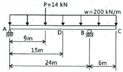
- 42.0
- 50.0
- 58.5
- 81.0
(정답률: 54%)
93. 열가소성수지로서 두께가 앏은 시트를 만들어 건축용 방수재료로 이용되며 내화학성의 파이프로도 활용되는 것은?
- 요소수지
- 폴리에틸렌수지
- 폴리스티렌수지
- 폴리우레탄수지
(정답률: 51%)
94. 목재의 전건비중을 구하는 식은? (단, r : 비중, w : 전건중량, v : 전건용적)
- r = v/w
- r = w/v
- r = wㆍv
- r = w +v
(정답률: 55%)
95. 설계서의 단의수량 단위 및 소수위 표준위 적용이 틀린 것은?
- 공사폭원 : m, 1위
- 공사면적 : m2, 2위
- 직공인부 : 인, 2위
- 토적(체적) : m3, 2위
(정답률: 53%)
96. 시공계획 결정과정에서 검토 할 중심과제에 해당하지 않은 것은?
- 발주자가 제시한 계약조건
- 현장의 공사조건
- 입찰서
- 기본공정표
(정답률: 63%)
97. 대규모 자동 살수 관개조직에서 가장 많이 사용되는 살수기로 맞는 것은?
- 분무살수기
- 회전살수기
- 회전입상살수기
- 분류살수기
(정답률: 64%)
98. 조도기준에 의한 공원의 조도표준은?
- 10 lux
- 40 lux
- 100 lux
- 400 lux
(정답률: 50%)
99. 콘크리트의 건조수축에 가장 큰 영향을 미치는 요인은?
- 잔골재율
- 단위수량
- 단위시멘트량
- 단위굵은골재량
(정답률: 43%)
100. 벽돌 및 돌쌓기 시공과 관련한 내용 설명이 적합하지 않은 것은?
- 벽돌과 돌의 이어쌓기 부분은 계단형으로 마감하다.
- 벽돌과 돌의 1일 쌓기 높이는 1.2m를 표준으로 하고, 최대 1.5m 이내로 한다.
- 벽돌에 부착된 불순물을 제거하고, 쌓기 전에 적정한 물 축이기를 한다.
- 돌쌓기는 멧쌓기를 원칙으로 하며, 신축줄눈 간격은 10m를 표준으로 한다.
(정답률: 66%)
6과목: 조경관리론
101. 참나무류에 발생하는 참나무시들음병의 병균을 매개하는 곤충은?
- 참나무방패벌레
- 참나무하늘소
- 광릉긴나무좀
- 갈참나무비단벌레
(정답률: 67%)
102. 다음의 잡초에 의한 피해 중 저목(低木)의 경우에 해당되지 않는 것은?
- 일조 부족 현상을 초래한다.
- 밑가지가 고사(枯死)한다.
- 잡초에 덮인 부분의 수피가 벗겨진다.
- 병해충의 피해 증대 및 관상가치가 저하된다.
(정답률: 49%)
103. 원로나 광장을 아스팔트로 포장한 경우 내구 연수는 몇 년 인가?
- 5년
- 10년
- 15년
- 20년
(정답률: 41%)
104. 다음 중 수목이 필요로 한는 무기양료의 종류와 기능 중 붕소(B)에 해당하는 것은?
- 요소(urea)분해 효소의 구성성분이다.
- 화분관의 생장 및 핵산과 섬유소 합성에 관여 한다.
- 엽록소의 합성에 필수적이고, 효소의 활성제, 광합성이 물의 광분해를 촉진한다.
- 세포벽의 구성성분으로 원형질말의 정상적인 기능에 관여하며 효소의 활성제로 이용된다.
(정답률: 31%)
1⑤. 작업현장에서의 상해 종류 중 압좌, 충동, 추락 등으로 인하여 외부의 상처 없이 피하조직 또는 근육부 등 내부조식이나 장기가 손상받은 상해를 무엇이라 하는가?
- 부종
- 자상
- 좌상
- 창상
(정답률: 62%)
106. 소나무류와 잣나무에 발생하는 소나무재선충병의 예방약제에 해당하는 것은? (문제 오류로 실제 시험에서는 1, 3, 4번이 정답처리 되었습니다. 여기서는 1번을 누르면 정답 처리 됩니다.)
- 아바멕틴 유제
- 헥사코나졸 액상수화제
- 포스티아제이트
- 아세타미프리드 액제
(정답률: 69%)
107. 다음 중 같은 양을 첨가했을 때 토양의 산성을 중화하는 능력이 가장 큰 것은?
- 생석회(CaO)
- 소석회(Ca(OH)2)
- 탄산석회(CaCO3)
- 염화칼슘(CaCl2)
(정답률: 65%)
108. 다음 중 수경시설의 유지관리 내용으로 옳지 않은 것은?
- 수경시설의 규모를 판단하여 필요할 경우 각각의 설비시설에 대한 담당자를 선임해야 한다.
- 횡축폄프가 정상적으로 작동되도록 전류계부하상태, 절연저항, 모터의 봉수, 방청상태, 케이블손상여부 등에 대하여 점검정비를 해야 하며, 이상이 발견되면 즉시 원인분석과 조치를 해야 한다.
- 수중조명기구는 효과적인 조명연출과 안전을 위해 기계적 성능, 전기적 성능, 광학적 성능으로 나누어 점검하고 특히 절연측정을 하여 각 회로마다 이상여부를 확인하여 이상이 발생하면 즉시 원인분석과 조치를 취해야 한다.
- 수경시설의 기능과 미관유지를 위해서 정기적인 청소를 해야 하며, 정화시설이 없는 경우에는 1회/월, 있는 경우에는 4회/년 청소하는 것을 원칙으로 한다.
(정답률: 36%)
109. 해충 방제방법 중 생물적 방제의 장점에 해당하는 것은?
- 효과가 더디게 나타난다.
- 환경의 영향을 많이 받는다.
- 안전한 농산물 생산이 가능하다.
- 화학합성농양과 사용시 많은 주의가 요규 된다.
(정답률: 72%)
110. 식물의 생육에 필요한 양분의 검증방법으로 검증시 시간이 많이 걸려서 실제적으로 적용 하기에 어려운 것은?
- 식물조직분석(植物組織分析)
- 토양분석(土壤分析)
- 식물체분석(植物體分析)
- 양분시험법(養分試驗法)
(정답률: 62%)
111. 비료의 질소함량을 정량적으로 분석하며, 오래 전부터 사용하고 있는 분석방법은?
- Lancast법
- Kjeldahl 증류법
- Walkley black법
- Tyurin법
(정답률: 58%)
112. 진밀도가 2.6, 가밀도가 1.2인 토양의 최대용수량은 얼마인가?
- 30%
- 47%
- 54%
- 60%
(정답률: 46%)
113. 곤충의 변태 유형과 애벌레의 명칭이 바르게 연결된 것은?
- 완전변태 - 유충(larva)
- 완전변태 - 약충(nymph)
- 반변태 - 약충(nymph)
- 점변태 - 유충(larva)
(정답률: 70%)
114. 블록포장의 파손원인으로 볼 수 없는 것은?
- 블록모서리 파손
- 포장표면의 만곡
- 블록 자체 파손
- 줄눈 확장에 의한 침하
(정답률: 52%)
115. 관리 계획 수립시 추적 검토사항의 주된 내용이 아닌 것은?
- 구체적 시민의 요구
- 유지관리 수준의 기준화
- 관리단계에 있어 지장이 되는 원인이 분석
- 이용조사에 의한 시민요구의 구체적 행동의 평가
(정답률: 44%)
116. 다음 잔디류 중 토양산도에 적응성이 가장 큰 것은?
- Tall fescue
- Creeping bentgrass
- Perennial ryegrass
- Kentuck bluegrass
(정답률: 43%)
117. 공원 관리 업무 수행이 도급관리 방식에 대한 설명 중 틀린 것은?
- 관리비가 싸다.
- 임기웅변적 조처가 가능하다.
- 관리주체가 보유한 설비로는 불가능한 업무에 적합하다.
- 전문적 지식, 기능을 가진 전문가를 통한 양질의 서비스를 기할 수 있다.
(정답률: 61%)
118. 디디티(DDT)와 유사한 화합물이지만 곤충에 대한 살충력은 없고 응애류에만 선택적 살비력을 나타내는 약제는?
- 에테폰액제
- 아바멕틴유제
- 만코제브수화제
- 옥시플루오르펜유제
(정답률: 46%)
119. 오존에 의한 피자식물의 잎에 나타나는 피해 형태와 관계없는 것은?
- 황화
- 표백
- 변색
- 엽맥사이의 괴저
(정답률: 46%)
120. 어떤 작업장에서 목재가공용 둥근톱 기계가 작업중 갑작스런 고장을 일으켰다. 이때 실시하는 안전점검을 무엇이라 하는가?
- 사후점검
- 임시점검
- 정기점검
- 특별점검
(정답률: 57%)